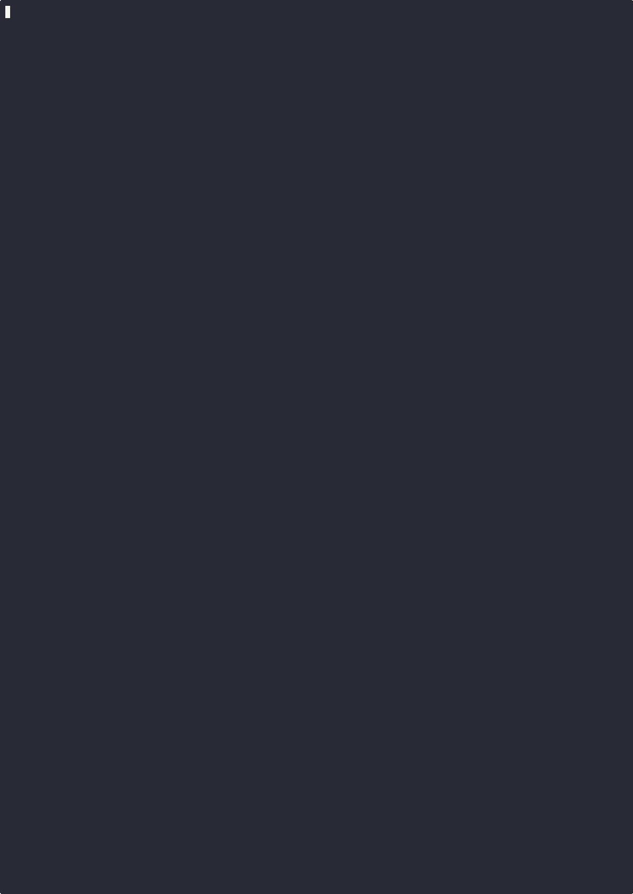

lmcache bench engine#
The lmcache bench engine command runs sustained performance benchmarks
against an inference engine (e.g., vLLM). It supports multiple workload types
that exercise different caching patterns and reports TTFT, decoding speed, and
throughput metrics.
lmcache bench engine [options]
There are three ways to configure the benchmark:
CLI arguments – pass all options on the command line.
Interactive mode – run
lmcache bench enginewithout required args and follow the step-by-step prompts.Config file – save a configuration to JSON and replay it with
--config.
Quick Start#
Minimal (with all required arguments):
lmcache bench engine \
--engine-url http://localhost:8000 \
--workload long-doc-qa \
--lmcache-url http://localhost:8080
Interactive mode (guided setup):
lmcache bench engine
The interactive mode walks you through each required setting, then asks whether you want to configure general and workload-specific options or use defaults.
From a saved config file:
lmcache bench engine --engine-url http://localhost:8000 \
--config my_bench.json
Config files contain benchmark parameters (workload, KV cache settings, etc.) but not the engine URL, so you can reuse the same config against different engines.
Export a config without running the benchmark:
lmcache bench engine \
--engine-url http://localhost:8000 \
--workload long-doc-qa \
--lmcache-url http://localhost:8080 \
--export-config my_bench.json
This resolves all auto-detected values (model name, tokens per GB) and saves them to a portable JSON file that works without an LMCache server.
Non-interactive mode (for scripts and CI):
lmcache bench engine \
--engine-url http://localhost:8000 \
--workload long-doc-qa \
--lmcache-url http://localhost:8080 \
--no-interactive
Errors immediately if any required argument is missing, instead of entering interactive mode. Useful in automated pipelines.
If you don’t have an LMCache server, you can pass --tokens-per-gb-kvcache
directly instead of --lmcache-url
(see Finding --tokens-per-gb-kvcache for how to find this value).
General Options#
Flag |
Required |
Description |
|---|---|---|
|
No |
Load configuration from a JSON file. Skips interactive mode. CLI flags override values in the file. The engine URL is not stored in config files and must be provided separately. |
|
No |
Export resolved configuration to a JSON file and exit. Does not run the benchmark. Auto-detected values (model, tokens per GB) are resolved and saved so the config is portable. Environment- specific values (engine URL, LMCache URL) are excluded. |
|
No |
Disable interactive mode. Errors if required arguments are missing instead of prompting. Useful for scripts and CI. |
|
Yes |
Inference engine URL (e.g., |
|
Yes |
Workload type: |
|
* |
Tokens per GB of KV cache. Required unless |
|
No |
LMCache HTTP server URL. When provided, |
|
No |
Model name. Auto-detected from the engine if omitted. |
|
No |
Target active KV cache volume in GB (default: 100). |
|
No |
Random seed (default: 42). |
|
No |
Directory for CSV and JSON output files (default: current directory). |
|
No |
Skip CSV export. |
|
No |
Export a JSON summary file. |
|
No |
Suppress the real-time progress display. |
Finding --tokens-per-gb-kvcache#
If you have an LMCache server running, the easiest approach is to pass
--lmcache-url and let the tool auto-detect the value.
If you are using vLLM without LMCache, look for these lines in vLLM’s startup log:
INFO: Available KV cache memory: 12.34 GiB
INFO: GPU KV cache size: 567,890 tokens
Then compute:
tokens_per_gb = 567890 / 12.34 = 46,020
Workloads#
long-doc-qa#
Simulates repeated Q&A over long documents. Warmup sends each document once to populate the KV cache, then benchmark queries are dispatched with semaphore-controlled concurrency.
Flag |
Default |
Description |
|---|---|---|
|
10000 |
Token length of each synthetic document. |
|
2 |
Number of questions asked per document. |
|
random |
Request ordering: |
|
3 |
Maximum concurrent in-flight requests. |
Example:
lmcache bench engine \
--engine-url http://localhost:8000 \
--workload long-doc-qa \
--lmcache-url http://localhost:8080 \
--kv-cache-volume 50 \
--ldqa-document-length 8000 \
--ldqa-query-per-document 4 \
--ldqa-shuffle-policy tile
multi-round-chat#
Simulates multi-round chat with stateful sessions. Creates concurrent user sessions, dispatches requests at a fixed QPS rate, and records responses in session history so each subsequent query includes prior context.
Flag |
Default |
Description |
|---|---|---|
|
2000 |
System prompt token length per session. |
|
10000 |
Pre-filled chat history token length. |
|
50 |
Tokens per user query. |
|
200 |
Max tokens to generate per response. |
|
1.0 |
Target queries per second. |
|
60.0 |
Benchmark duration in seconds. |
Example:
lmcache bench engine \
--engine-url http://localhost:8000 \
--workload multi-round-chat \
--lmcache-url http://localhost:8080 \
--mrc-qps 2.0 \
--mrc-duration 120
random-prefill#
Fires all requests simultaneously with max_tokens=1 to measure pure
prefill performance. No warmup phase.
Flag |
Default |
Description |
|---|---|---|
|
10000 |
Token length per prefill request. |
|
50 |
Number of requests to fire. |
Example:
lmcache bench engine \
--engine-url http://localhost:8000 \
--workload random-prefill \
--lmcache-url http://localhost:8080 \
--rp-request-length 15000 \
--rp-num-requests 100
Interactive Mode#
{kind=link}

When --engine-url or --workload is not provided (and
--no-interactive is not set), the tool enters interactive mode. It guides
you through four phases:
Required settings – engine URL, workload type, LMCache server (or tokens per GB).
General settings (optional gate) – model name, KV cache volume.
Workload settings (optional gate) – workload-specific parameters.
Summary and action – review configuration, then start the benchmark or export to a JSON file.
Each prompt focuses on a single setting. Selection prompts use arrow keys; text and number prompts accept typed input with defaults shown in brackets.
══════════════════════════════════════════════════
lmcache bench engine -- Interactive Setup
══════════════════════════════════════════════════
Engine URL
URL of the inference engine.
[default: http://localhost:8000] >
Workload
The type of benchmark workload to run.
Use up/down to navigate, Enter to select.
* long-doc-qa Repeated Q&A over long documents
multi-round-chat Multi-turn chat with stateful sessions
random-prefill Prefill-only requests fired simultaneously
LMCache Server
Do you have a running LMCache server?
It can auto-detect KV cache size information.
[default: Y] (Y/n) >
...
──────────────────────────────────────────────────
Configuration Summary
──────────────────────────────────────────────────
Workload: long-doc-qa
Model: Qwen/Qwen3-14B
Tokens per GB: 6553
...
──────────────────────────────────────────────────
What would you like to do?
* Start benchmark
Export configuration for later use and exit
When you choose “Export configuration”, all auto-detected values (model name, tokens per GB) are resolved and saved to a portable JSON file.
Config File#
Config files store benchmark parameters but not environment-specific values like engine URL or LMCache URL. This lets you reuse the same config across different environments.
You can create a config file in three ways:
Interactive mode – choose “Export configuration” at the summary step.
``–export-config`` – resolve and export from CLI without running.
Manually – write JSON with keys matching CLI arg names (dashes replaced by underscores).
Example config file:
{
"model": "Qwen/Qwen3-14B",
"workload": "long-doc-qa",
"tokens_per_gb_kvcache": 6553,
"kv_cache_volume": 100.0,
"ldqa_document_length": 10000,
"ldqa_query_per_document": 2,
"ldqa_shuffle_policy": "random",
"ldqa_num_inflight_requests": 3
}
Load it with --config (engine URL must be provided separately):
lmcache bench engine --engine-url http://localhost:8000 \
--config my_bench.json
CLI arguments override config file values, so you can use a base config and tweak individual settings:
# Use saved config but override KV cache volume
lmcache bench engine --engine-url http://localhost:8000 \
--config my_bench.json --kv-cache-volume 200
Output#
Terminal (real-time progress)#
During the benchmark, a live progress display shows in-flight requests,
average TTFT, decode speed, and throughput. Suppress it with -q.
Terminal (final summary)#
After completion, a summary table is printed:
======= Engine Benchmark Result (long-doc-qa) ========
---------------------- Configuration ------------------
Engine URL: http://localhost:8000
Model: Qwen/Qwen3-14B
Workload: long-doc-qa
------------------------- Results ---------------------
Successful requests: 20
Failed requests: 0
Benchmark duration (s): 31.34
Total input tokens: 200000
Total output tokens: 2560
Input throughput (tok/s): 6381.62
Output throughput (tok/s): 81.69
--------------- Time to First Token -------------------
Mean TTFT (ms): 313.41
P50 TTFT (ms): 272.83
P90 TTFT (ms): 587.21
P99 TTFT (ms): 837.32
------------------ Decoding Speed ---------------------
Mean decode (tok/s): 48.23
P50 decode (tok/s): 47.91
P90 decode (tok/s): 42.10
P99 decode (tok/s): 38.55
======================================================
CSV and JSON#
bench_results.csv– per-request metrics (TTFT, latency, decode speed, token counts). Written by default; skip with--no-csv.bench_summary.json– aggregate statistics with percentiles and config metadata. Opt-in with--json.
Both files are written to --output-dir (default: current directory).
Exit Codes#
Code |
Meaning |
|---|---|
|
All requests succeeded. |
|
One or more requests failed. |